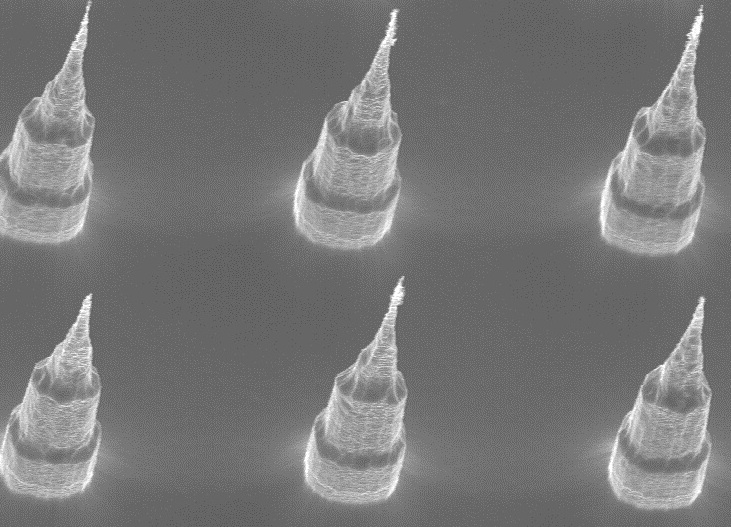
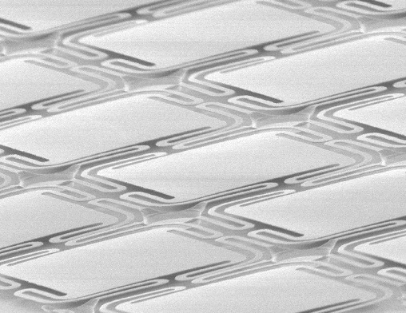

Why MEMS?
Micro-electro-mechanical systems, or MEMS, are silicon-based devices that can serve as sensors, actuators, or passive mechanical structures (such as microfluidic channels). MEMS are manufactured on silicon or glass wafers using techniques originally developed by the semiconductor industry for forming micron-scale features. As a result, MEMS are tiny, low cost, and low power compared to traditional electro-mechanical devices made by conventional machining. MEMS can easily be integrated with microprocessors, wireless telemetry and other circuitry, enabling powerful capabilities in packages only millimeters on a side. MEMS devices are already in widespread use in smartphones, automobiles, and consumer electronics. The uses for MEMS devices are limited only by a product designer's imagination. In the near future, MEMS will be at the heart of the Internet of Things.Uses for MEMS Devices

Medical Devices
- Applications: Invasive diagnostics, implantable devices, drug delivery, cardiology
- MEMS Devices: Pressure and temperature sensors, microfluidics, micro-needles
- Customers: Endotronix, Cantimer, UCSF Ophthalmology
- Presentation: MEMS Pressure Sensors for Medical Applications
Industrial Sensing
- Applications: Aerospace, industrial process or equipment monitoring, safety, security
- MEMS Devices: Inertial, microphones, flow, pressure, infrared, radiation sensors
- Customers: DARPA, NNTS, WiMM Labs
- Presentation: A Practical Guide to MEMS Inertial Sensors

Imaging and Optoelectronics
- Applications: Imaging, display, laser beam steering, optical fiber networking
- MEMS Devices: Bolometers, micro-mirrors, micro-positioners, grating light valves, switches
- Customers: Finisar, Silicon Light Machines, NovaSpectra
Biotechnology and Diagnostics
- Applications: Cell culture, blood diagnostics, cytometry
- MEMS Devices: Microfluidics, micromolds, valves, cantilevers
- Customers: Wave80 Biosciences, Caliper LifeSciences, Edge Embossing, Fluxion Biosciences
- Presentation: MEMS for Medical Applications